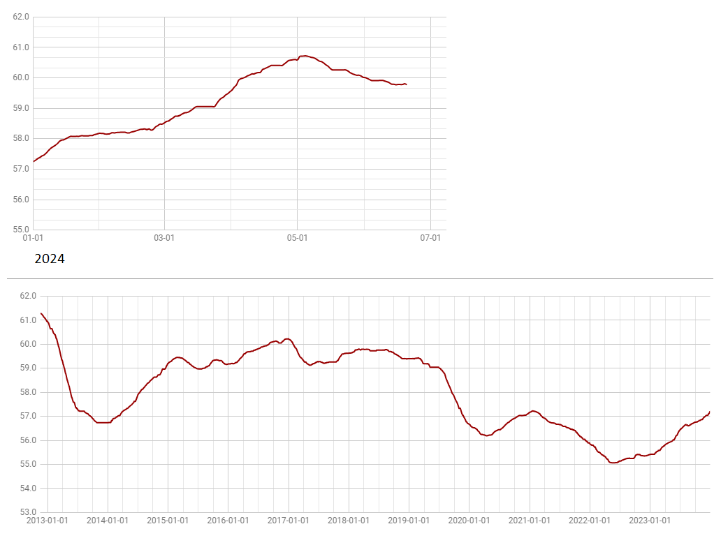

# A Cor Púrpura
Caloni, 2024-06-04 <cinema> <movies> [up] [copy]Imagine um remake deste filme de Steven Spielberg de 1985, mas com personagens brancos. Ridículo, não? Deslocado. No melhor dos casos: patético. Você remove toda a carga e atmosfera cultural de uma etnia e por consequência conta uma história dissociada da realidade de seu microcosmos, este mundo das mulheres negras do início do século 20 no interior dos EUA descrito no livro homônimo de Alice Walker. É um romance epistolar, contado no formato de cartas que a protagonista escreve, mas nunca envia, para Deus e sua irmã, separada por quase toda a vida.
Whoopi Goldberg faz essa protagonista viver quase sempre com seus movimentos de olhos. Sua fase adulta é uma mistura de sagacidade por entender o sistema pelo qual ela administra o violento e ignorante marido e ao mesmo tempo ingenuidade por nunca ter vivido fora de um casamento ou sob o domínio do pai, que a estuprava e teve com ela dois filhos, afastados há tanto mais tempo que a irmã que ela não tem certeza se os teve mesmo.
Spielberg dirige seu material com um conhecimento absurdo. Sua equipe está alinhada na narrativa. Seu estilo torna uma experiência pesada em uma jornada quase lúdica pelo sofrimento desta e de outras mulheres. O filme dá muitas chances de te emocionar, mas é apenas no arco final, no retorno dos filhos, que você percebe o arco maior, metafórico, do retorno às origens africanas, que é o mais poderoso de todos. É um filme para a família (com ressalvas), mas é ao mesmo tempo um trabalho maduro, que ambiciosa ir além da superfície melodramática. Mais que um estudo de personagens históricos, é um estudo de época e de seus costumes.
# Wonka
Caloni, 2024-06-04 <cinema> <movies> [up] [copy]Lúdico até dizer chega, esta versão musical de Willy Wonka Origins é lúdico e fofinho porque não é dirigido pelo Tim Burton, mas por Paul King, como assim como em Paddington prioriza a magia dos sonhos. O ator francês de Duna está estranhamente à vontade e o elenco é afiado. Hugh Grant vergonhosamente pagando seus boletos como um Oompa Loompa cuja cabeça está tão mal encaixada no CGI que já vi trabalhos melhores feitos para Tik Tok. Mas o design de produção é competente, antes de ser criativo. Fundo verde para todo o lado.
# Tribunal Noturno
Caloni, 2024-06-04 <cinema> <series> [up] [copy]Pensei que não fizessem mais séries sitcom com diálogos apressados e mal feitos como esse, mas aqui estamos em 2024. Aqueles personagens preguiçosos e uma noção zero de como agradar o espectador. É impossível assistir um episódio de 20 minutos sem pensar em dropar imediatamente.
# Assassino por Acaso
Caloni, 2024-06-10 <cinemaqui> <cinema> <movies> [up] [copy]Gary Johnson, este pacato, metódico, monótono professor de Psicologia e, como se não bastasse, Filosofia, vai aprontar poucas e boas em uma adaptação livre de sua biografia em um romance fofo e doentio na medida certa para que nós, espectadores, nos identifiquemos com as ondas da paixão entre a inesquecível Madison e o agora alterego perigoso e atraente Ron.
Um filme com uma trama com mudança de personalidade atrelada à máxima filosófica de Nietzsche em se transformar na melhor de suas versões dentro de uma investigação policial envolve uma porrada de temas. Felizmente, o filme consegue dar uma ideia, ainda que não muito profunda, de como todos estes temas poderiam dialogar entre si.
Me incomoda o fato dos seus personagens serem tão amáveis e a química do casal tão instantânea e ainda assim precisamos percorrer um longo caminho para a redenção. Mas esta é a regra do jogo: sem conflitos, sem filme.
O que incomoda mais é que o forte do diretor Richard Linklater (Trilogia do Antes, Jovens, Loucos e Rebeldes, Escola do Rock, Boyhood) não é nos envolver em tramas complexas e fechadas, mas nos embalar em experiências humanas que realçam a relação irreconciliável entre a lógica racional e as emoções que trazem essa mesma lógica viva e com energia para nosso mundo verborrágico e implacável.
Não à toa Linklater é o anfitrião de temas existenciais com uma irreverência quase impossível. E não à toa acompanhei este filme com pelo menos um pouco de ceticismo.
O resultado não é dos melhores. Ele é engraçado, isso ele é. Um humor em alguns momentos sombrio e até condenável, dependendo de como você enxerga o sistema de justiça. Esse tema infelizmente não é desenvolvido o suficiente até o momento em que um personagem chave morre e esta seria uma rima perfeita (não foi dessa vez).
Mas se o pecado do filme é não ser profundo demais em uma comédia dark, acho que ele está mais que perdoado pelo espectador comum, que vai se divertir imensamente com a trama principal. Há uma tensão tremenda que nunca termina, mas que te engana em alguns momentos que parece que tudo irá dar certo até não dar. Gente que vai ao cinema adora isso.
Estava eu com meu Visual Studio compilando um arquivo C e de repente:
unresolved external symbol sprintf
Uai. Depois de 30 segundos descubro que isso não ecxiste mais e que preciso adicionar esta lib para linkar:
legacy_stdio_definitions.lib
E tudo se resolveu =/
# Alocação sem construção
Caloni, 2024-06-11 <computer> [up] [copy]Meu amigo está mexendo com allocator e fez o seguinte teste, o que pode dar a ideia errada para o iniciante, porque testei aqui e deu tudo certo:
#include <iostream>
struct A {
A() = default;
uint64_t x;
};
int main()
{
auto alloc = std::allocator<A>();
A* p = alloc.allocate(2);
p[1].x = 10;
}
Porém, ele não havia revelado que a “struct” que ele usou não era dessas sem complexidade alguma, mas a std::string, que depende da construção porque possui membros que controlam o estado do objeto. E aí sim apenas alocar o espaço na memória não é suficiente. É preciso construir o objeto chamando o construtor.
#include <iostream>
#include <string>
struct A {
A() = default;
uint64_t x;
std::string y; // new member
};
int main()
{
auto alloc = std::allocator<A>();
A* p = alloc.allocate(2);
p[1].y = "y"; // crash
}
Ao depurar a chamada ao `operator =` que chama por sua vez o método `std::string::assign` é possível ver que o objeto está com os membros `size` e `capacity` com lixo. O que faz sentido, já que o construtor dessa string nunca foi chamado.
- this 0x00000216888f5858 <Error reading characters of string.> std::string *
[size] 14829735431805717965 unsigned __int64
[capacity] 14829735431805717965 unsigned __int64
+ [allocator] allocator std::_Compressed_pair<std::allocator<char>,std::_String_val<std::_Simple_types<char>>,1>
[0] <Unable to read memory> char
Para corrigir isso podemos usar o que C++ chama de placement new: uma construção de objeto em memória previamente disponível.
A* p = alloc.allocate(2); new (p) A[2]; // remember to use new array operator!
# A Semente do Mal
Caloni, 2024-06-11 <cinemaqui> <cinema> <movies> [up] [copy]O título original deste filme é Amelia's Children (as crianças de Amélia), o que faz muito mais sentido que A Semente do Mal, que além de vago lembra qualquer outro terror de sustos que já tenha estreado.
O que seria uma injustiça, pois este é um entretenimento sem sustos baratos. Ele mantém o terror psicológico, o que está de bom tamanho quando olhamos para a matriarca de uma família muito estranha. Ela passou por cirurgias plásticas o suficiente para perdermos o elo entre uma máscara e um ser humano, a linha tênue entre a feiura e a caricatura.
Anabela Moreira é a Amélia do título original desta produção belga-portuguesa. Ela emana e sugere uma figura conhecida da mãe que precisa comer seus filhos para permanecer jovem, um tema recorrente em muitos contos de fadas e mitos antigos. Esta figura é frequentemente retratada como uma bruxa ou uma criatura sobrenatural. Embora a origem exata deste tema seja difícil de rastrear, ele aparece em várias culturas ao redor do mundo.
No contexto de "A Semente do Mal", este mito atemporal é usado para explorar temas de vaidade, obsessão pela juventude e a degeneração do amor materno em uma obsessão doentia. A mãe, Amélia, torna-se um símbolo de terror, com suas cirurgias plásticas excessivas e sua transformação de uma figura materna em uma caricatura grotesca e assustadora.
A construção do enredo merece destaque. Ele parte de um lugar comum na tecnologia de hoje em dia com rastreamento de descendentes através da análise genética e nos remete para uma casa secular no meio de uma floresta portuguesa, terra-natal de Ed, que mora em Nova Iorque junto da jovem Riley. Ambos são yuppies e não possuem família próxima. Ed principalmente. Ele nunca soube de suas origens até ser presenteado por Riley com um desses serviços de rastreamento, o que o faz se reencontrar com sua mãe e seu até então desconhecido irmão gêmeo Manuel.
E quando você descobre que há um irmão gêmeo na jogada, o formato de uma novela vem à mente. O casal parte para o casarão isolado e, encantados a princípio, logo cada um irá trilhar caminhos diferentes nesta história.
Ed e Manuel são interpretados por Carloto Cotta e não há momento algum que você duvide que são duas pessoas distintas, com histórias de vida totalmente diferentes. Tudo bem que Ed com seu moletom surrado e usado logo se assemelha a um paciente em hospital psiquiátrico, sem muita personalidade para exibir. É Riley a responsável por mover a trama.
Ela é interpretada por Brigette Lundy-Paine com uma leveza inicial que lentamente se transforma em medo, angústia, desgosto e puro pavor. Sua voz oscila da certeza da intuição feminina até o ápice de não saber se sairá viva deste pesadelo da “vida real”.
A Semente do Mal poderia ser um estudo de personagens perturbador não fosse seu roteiro esquemático que está em busca daqueles fãs do “neo terror” da última década. A estrutura do suspense dramático segue todas as fórmulas que foram aos poucos sendo redescobertas no cinema dos últimos anos. Desde o moletom de Ed remetendo às vestes de dormir de Amelia Vanek tendo que cuidar de seu filho inquieto em Babadook sem conseguir ter um momento de paz, dormindo acordada, até a alusão leve e sutil de herdeiros que se aproveitam do status quo construído ao longo de gerações para permanecerem impunes ao que quer que façam, criminosos ou não (Corra!).
Infelizmente, ao se entregar demais às fórmulas, a produção bem dirigida por Gabriel Abrantes não mergulha junto na loucura do seu universo pecaminoso e cruel. Em contrapartida irá soar muito mais palatável à “elite” dos consumidores de terror desta década, um grupo de cinéfilos tão exigentes que existe uma fórmula a ser seguida para agradá-los. Para alguns (muitos) a ironia se perde entre as palavras que acabei de escrever.
# Fiz Chili
Caloni, 2024-06-11 <food> <cooking> [up] [copy]Há infinitas possibilidades de chili. O que eu fiz ficou bom para pegar com nachos, porque tem pouco caldo, e o que tem é levemente mais grosso para grudar no salgadinho de milho.
Este não vai feijão, mas talvez experimentem em uma próxima vez. Vai carne moída (para ficar fácil de pegar com nachos) que você pode queimar em uma panela para gerar a reação Maillard e separar. Na mesma panela refogue com manteiga cebola, alho, um pouco de tomate junto de extrato e tempere com coentro, louro, páprica defumada, salsão se tiver (eu não tinha, usei alho-poró) e alguma pimenta. Escolhi uma de molho de chili para ficar com o sabor característico. Também salpiquei um pouco de molho inglês.
Para a salsa use pimentão vermelho, a gosto mas é bom um médio para 600g de carne. Queime ele um pouco no fogão (direto no fogo) e depois junto de alguns tomates cortados ao meio, uma cebola e algumas pimentas a gosto coloque no forno (se tiver grill melhor ainda) até caramelizar. Quando estiver pronto bata tudo e junte à carne como um molho. Tudo em fogo alto para integrar e depois em fogo baixo para ir pegando sabor.
O segredo de um bom chili é esse tempo para pegar sabor. Reduza o molho ao mínimo e quando estiver ao seu gosto dissolva um pouco de amido de milho e integre para dar aquela pouca grossura que vai ajudar o molho a não ficar tão aguado e grudar nos nachos. Se já estiver assim ignore este conselho.
# A Ordem do Tempo
Caloni, 2024-06-12 <cinemaqui> <cinema> <movies> [up] [copy]Selecionado para o Festival de Cinema do Rio de 2023, a diretora Liliana Cavani desafia as convenções do próprio tempo. Inspirada pelo livro homônimo do físico italiano Carlo Rovelli, o filme compõe uma meditação sobre a mortalidade, a amizade e a natureza fugaz da conexão humana, além da nossa cada vez mais óbvia ignorância e incompreensão da oculta e verdadeira vulnerabilidade neste mundo.
Uma crise existencial e coletiva assola as personagens deste drama italiano. À medida que o tempo passa, o grupo de amigos, reunido para comemorar um aniversário marcante, é confrontado com a notícia bombástica de que o mundo em breve poderá chegar ao fim. O choque inicial dá lugar a uma sensação de distanciamento, à medida que cada personagem luta com sua própria mortalidade, revelando segredos há muito enterrados, conflitos antigos e emoções não ditas.
A direção de Cavani é uma aula de sutileza, capturando a intensidade emocional das interações do grupo com um olhar atento aos detalhes. O ritmo do filme é deliberado, permitindo ao público absorver o peso das crises existenciais dos personagens. A cinematografia, com o cenário pitoresco da vila servindo como pano de fundo comovente para as jornadas introspectivas dos amigos, não poderia ser mais confortante neste momento.
Mas o que realmente diferencia “A Ordem do Tempo” é a sua recusa em fornecer respostas fáceis ou resoluções claras. Este filme é uma exploração complexa, confusa e profundamente humana da condição humana. É um reflexo da nossa própria mortalidade, dos nossos relacionamentos e das escolhas que fazemos face à incerteza.
Num mundo onde o tempo se esgota, “A Ordem do Tempo” lembra-nos que são os momentos que partilhamos com os outros que realmente importam. Este é um filme que perdurará por muito tempo após a rolagem dos créditos, assombrando-nos com suas perguntas e desafiando-nos a reavaliar nossas próprias prioridades diante do desconhecido.
# Mudando o peso
Caloni, 2024-06-20 <body> [up] [copy]O gráfico da tendência do meu peso em 2024 diria que não está sendo um bom ano porque ainda não voltei ao peso do início. Esse tipo de resultado pode deixar muitas pessoas ansiosas. Vi em posts da comunidade que é temível se pesar todo dia. Há um consenso que isso só te trará mal no curto prazo. Eu acredito nisso, pelo menos para pessoas onde falte a reflexão do que esse número significa: apenas o nível de água em seu organismo em um dado momento do dia. Isso não acontece comigo porque eu sei o que esse número significa e prefiro ter todo o conhecimento possível, mesmo que ele doa às vezes.
A longo prazo, quando eu olho os registros de mais de dez anos se pesando quase todos os dias, desde 2013, eu paro de perder o medo de para onde meu peso vai. Justamente porque eu sei para onde ele está indo e posso fazer algo a respeito. Justamente porque eu me peso quase todos os dias e vejo a tendência antes de se tornar um problema. Foi assim ao longo de todos esses anos. As curvas não baixaram sem querer. Elas baixaram porque eu vi para onde elas estavam indo antes de chegar em um ponto crítico, onde aí sim todos esses sacrifícios que as pessoas testemunham fariam sentido. Mudar a tendência quando se tem a informação de para onde ela está indo é muito mais fácil porque é a realidade.
A mensagem desse post é só um questionamento: como você deseja viver sua transformação? Viver em uma constante torcida de altos e baixos para que seu peso eventualmente chegue onde você deseja, se pesando uma vez por semana e por mês como se fosse o resultado de uma loteria do seu corpo, aguardando mais uma semana ou um mês para saber finalmente se compensou os últimos dias? Ou entender o impacto do que você come a cada dia, de como se exercita, e o resultado atual, atualizado, para daí você ter, com o conhecimento, a liberdade de escolher para onde deseja ir?
# Hacks
Caloni, 2024-06-30 <cinema> <series> [up] [copy]Esta série é sobre uma velha comediante aposentada e milionária ganhando em cima de advogados para processar quem quiser copiar seu conteúdo produzido décadas atrás (e dá dinheiro mesmo, isso de viver às custas do passado) e uma nova aspirante a comediante que nunca veremos como se sai porque ela estará muito ocupada por duas temporadas tentando fazer esta velha voltar ao estrelato em uma nova era onde velhas brancas não são bem vistas. Mas para compensar ela tem um CEO negro e gay.
Hacks navega por alguns bons diálogos em alguns episódios da primeira temporada e uma dinâmica divertida paralela entre a filha do dono e um empresário todo certinho. O núcleo da narrativa entre a velha e a nova loirinha não é muito inspirado. Aliás, nem sei como isso ganhou um Emmy. Deve ser muita falta de conteúdo de qualidade e sobra de conteúdo de cabelo colorido. Mas vai saber o perfil dessa galera que dá esses prêmios hoje em dia.
# A Grande Fuga
Caloni, 2024-06-30 <cinemaqui> <cinema> <movies> [up] [copy]Entre os reviews de alguns dos críticos europeus sobre este possível último filme de Michael Caine com Glenda Jackson há um consenso que não se fazem mais filmes como esse. O que me chama a atenção é que alguém ainda assista filmes como esse.
Oitenta anos separam as gerações de agora e os ingleses, franceses e americanos que adentraram o território tomado pelos alemães sabendo que não voltariam. Pelo menos não a maioria. Para um panorama mais histórico sobre este sangrento dia assista Dunkirk.
Hoje a visão de uma guerra em países civilizados é uma imagem romântica. E como fica a cabeça dos sobreviventes depois de tantas mudanças no mundo? São vistos como herois? Suas estátuas serão derrubadas no futuro depois de suas narrativas reinterpretadas ao bel prazer de gerações alienadas?
Nada disso importa em A Grande Fuga, um drama e romance lúdicos sobre sonhos e pesadelos do passado. É sobre um casal que atravessou décadas juntos e agora se suportam em uma das fases mais difíceis: envelhecer enquanto morrem aos poucos, os remédios se acumulando após cada refeição. E dar graças a Deus por serem um dos privilegiados a chegarem lá.
Na verdade não. Nenhum dos dois está grato. Para espanto da jovem enfermeira que supostamente conviveu algum tempo com o casal. O enredo não se dá ao trabalho de estabelecer relações. Ele narra um conto onde detalhes de seus personagens estão espalhados na percepção do espectador. Tanto é assim que as outras pessoas que aparecem na história, o veterano do exército e o jovem da marinha, são reflexos do personagem de Michael Caine. É tudo sobre o casal principal.
Jackson e Caine conseguem manter um equilíbrio elegante entre o cansaço da velhice e a energia para suportar cada dia com alegria e um certo sarcasmo. Estar velho é saber que se está despedindo aos poucos do mundo e eles encaram isso como mais um traço inevitável do cotidiano.
O contraponto é que a geração atual insiste em romantizar o que Caine faz ao ir sozinho prestar suas homenagens aos veteranos de guerra do dia D. Um fuzuê na TV anuncia o evento com estardalhaço. Tudo precisa ser positivo e recebido com salva de palmas. E isso cansa o casal. Quem não se cansaria?
Ciente de não ser nada de mais, A Grande Fuga de fato é um filme que não se faz mais hoje em dia. Nem deveria ser feito. O projeto comercial é de alcance limitado e sua história piegas consta em uma lista virtualmente infinita de dramas pessoais que podem ser encontrados em biografias cheias de poeira e recortes de jornal amarelados. E o mais importante é que, sinceramente, a geração não liga para herois do passado. Exceto se for um casal de velhos? Fica o questionamento.
# Lições no encerramento do CineOP
Caloni, 2024-06-30 <cinemaqui> mostracineop [up] [copy]Cheguei no final do meu primeiro Festival de Cinema de Ouro Preto, vi uma sessão de curtas restaurados e parte do tradicional show que finaliza os festivais de cinema de Minas (Tiradentes e Belo Horizonte inclusos).
Meu primeiro evento deste circuito foi ano passado em Tiradentes. Havíamos passado por uma paralisação de quatro anos em investimentos federais e 2023 foi o ano da retomada do Ministério da Cultura. Como ele foi renomeado: da Reconstrução. E aplaudido antes de cada sessão.
Foi um ano intenso. As sessões quase sempre de trabalhos imersos na questão da arte radical, de vanguarda, incompreendida e de guerrilha. Um caos no mínimo curioso. Para os mais afoitos, um grito de libertação.
Fast forward para o meio de 2024. O tema deste ano em Ouro Preto foi de restauração às memórias audiovisuais há muito perdidas. Algumas nunca viram a luz da telona e outras nunca foram revisitadas.
Foi o caso de alguns desses curtas de animação. Dos anos 60, 90, um pandêmico e outro atual. Pela data e pela proposta experimental, você pode imaginar que alguns se perderam no tempo entre gerações e outros se perderam na época e na proposta juvenil de um cinema nacional ainda engatinhando (ou apenas mamando).
Hoje foi a vez de ver e rever estes trabalhos no mínimo curiosos e no máximo gritos de libertação artística. Formas, cores e narrativas que não irei descrever para os leitores do futuro, pois é inútil. Isso já passou.
Vocês terão outras chances nas próximas edições desses festivais. A mensagem deste texto é de um panorama da atmosfera artística do cinema mineiro e um viés de esperança por conteúdos mais centrados. Pelo menos é o que eu espero nas próximas visitas ao evento, que continua sendo um primor de organização.
Os tempos de guerrilha já passaram. É hora de produzir para o futuro, mesmo que com um olho alerta para o passado e o presente que decidem isso no final do dia. O futuro será reconstruído olhando através de lentes mais otimistas. Sem pandemia, sem genocidas. Com novas linguagens e novas mensagens.
# Game of Thrones
Caloni, 2024-06-30 <cinema> <series> [up] [copy]A primeira temporada evoca algo muito bonito em uma série medieval: a brutalidade cruel e realista de tempos mais simples, recursos mais escassos. Uma época onde o poder emanava dos mais fortes e a moral orbitava em torno da honra. Em meio a isso, sete famílias coexistem em uma região de um mundo alternativo ou muito antigo onde os invernos são longos, imprevisíveis e rigorosos e a magia não está totalmente extinta. Assim como os dragões.
Os personagens que vão surgindo se emaranham em uma narrativa propositadamente confusa para não lembrarmos muito bem das relações de poder entre tantos povos. Apenas o suficiente. E é quando esta sensível, vulnerável malha de influências vai se rasgando é que percebemos o quão frágil é a estabilidade de uma sociedade que luta para não morrer de fome e manter suas mulheres intactas. Bom, pelo menos seus úteros e os rebentos que de lá surgem.
A brutalidade da série fascina e sua política vaga dá uma ideia do quão perdidas são as pessoas nesta realidade. A primeira temporada é quase um House of Cards medieval, mas para gente comum, sem pretensão de soar realista se precisar sacrificar o apelo comercial do sexo, das inúmeras mulheres gostosas e jovens (incluindo as putas) e a virilidade dos homens, que batalham e adoram ver lutas sob qualquer pretexto.
A segunda temporada falha por não aproveitar o mesmo orçamento da primeira e aposta em um roteiro de guerra sem batalha alguma (exceto a última, sofrível). Ficamos assistindo nos bastidores do poder e o brilho se perde porque toda a intrincada relação de poder é apenas subdesenvolvida e pueril. Ela evoca algo além do que é mostrado e não sentimos ou nos identificamos mais com tantas famílias em ritmo de luta. O jogo de influências cai como um roteiro mal feito e mal conduzido. E sem dinheiro.
Ainda existe um certo charme no apelo fantástico e nas alusões à era medieval e a história da troca de poderes e como as coisas deveriam funcionar na prática, longe dos livros. Mas isso diálogos pobres e eles estenderem demais as horas da trama torna tudo insosso.
# Herança
Caloni, 2024-06-30 <cinema> <movies> [up] [copy]A única coisa desta desinteressante trama com pessoas impossíveis de serem reais é Simon Pegg ter pego seu personagem e transformado em uma quase caricatura do estereótipo do homem misterioso. Ele dialoga com ritmo e sarcasmo interno, trancado no subsolo da floresta em torno da mansão de uma família poderosa. Ao lado uma herdeira, Lily Collins pra lá de menininha perdida e birrenta que tem a impossível tarefa de nos convencer que é uma promotora pública de Nova Iorque. O máximo que ela consegue é ser uma riquinha mimada com dad issues.